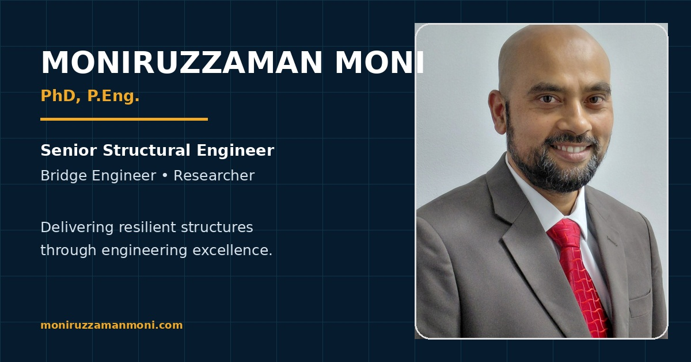

University of Toronto · PhD
Real-Time Aeroelastic Hybrid Simulation
Development and experimental validation of a real-time aeroelastic hybrid-simulation framework for a base-pivoting building model in a wind tunnel.
DisciplineWind Engineering
MethodReal-Time Hybrid Simulation
SystemBase-Pivoting Building
FocusStructural Dynamics